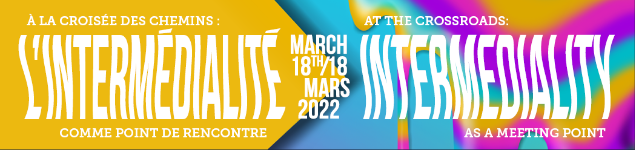

Remerciements des organisateurs et organisatrices pour cette occasion de parole et de partage.

Présentation dans le cadre du 19e colloque étudiant en littérature canadienne comparée de l’Université de Sherbrooke « À la croisée des chemins : l’intermédialité comme point de rencontre » - 18 Mars 2022
Titre : Textapes et profil numérique
Sous-titre : Analyse de l’œuvre transmédiale Les Textapes d'Alice
Slides #
Texte #
Web-série française adaptée à l’origine d’un Tumblr du même nom créé par Angela Soupe, Les Textapes d’Alice retrace le parcours amoureux d’une jeune femme, Alice, au fil de ses relations et de ses rencontres avec ce slogan :
« L’amour c’était déjà compliqué avant, depuis internet c’est pire ».
C’est justement de cela dont il va être question ici, la problématique de la relation 2.0 que thématise la série en impliquant directement les environnements numériques que nous utilisons pour nous mettre en relation (réseaux sociaux, applications de rencontres ou autres) dans la structuration de son image : incrustation de textos, de captures d’écrans, de spams, etc. Cette liberté éditoriale fait de la série un intermédia, un milieu où l’image est à lire, et où le texte montré est à comprendre comme une exhibition. Les études de l’intermédialité qui seront convoqués ici permettent justement de questionner les composants qui constituent la création et d’en saisir les enjeux épistémologiques.
L’entreprise du « Montrer Internet » permet d’adresser plusieurs questions :
- Que signifie être en relation aujourd’hui ? comment rencontrons-nous amoureusement (ou non) l’autre par le flux des écritures numériques ? Qui rencontrons-nous et quel profil de nous s’établit dans la rencontre numérique ?
- Si les environnements numériques qui nous mettent en relation avec autrui sont aussi les dépositaires d’informations privées nous concernant, sommes-nous encore en plein pouvoir de nos identités ou sommes-nous joués comme des profils ?
- Dans ces espaces d’informations et de communication, est-ce l’image ou l’écriture qui nous définit ? et ne sommes-nous pas au fond déjà intermédiaux en ce sens ?
Les Textapes d’Alice présente un monde où l’individu est un être social ou n’est pas, où le profil dérobe l’être, où la relation est scandée par les notifications lu, vu, envoyé, où la consommation est une consommation d’écriture en masse qui viennent enrichir nos historiques et nos histoires individuelles. En fait un monde où le média roi, même à l’image, c’est le texte tapé.
Dans cette communication, je vais me concentrer principalement sur l’adaptation à l’écran d’une matière qui était déjà présente à l’écran, le Tumblr. C’est de cette remédiation dont il va être question dans un premier temps.
Les Textapes #
Un jour, Parce que, selon ses dires, elle s’ennuyait en montagne, Angela Soupe se met à écrire une série de billets sur un Tumblr dans la même lignée que le site Dans Ton Chat qui est un site qui répertorie des conversations entre geeks. Les Textapes d’Alice reprend la structure de la bribe et construit un récit à partir d’extraits de conversation, suite d’échanges courts et vifs, tout cela inspiré librement de la propre vie de l’auteure (à 98% véritable selon cette dernière).
L’histoire est celle d’Alice, trente ans, désignée comme web addict, et perdue entre les modèles de relation (du couple et ceux du célibat), entre les modes de connexion (offline & online), entre toutes les plateformes de sociabilité et leurs codes d’utilisation et de signification.
Alice se joue et est en réalité elle-même jouée par la multiplicité des statuts de sa génération. Son récit est un parcours amoureux rythmé par les likes, les unfollow, les demandes en amis, dans un labyrinthe entre les différents profils qui floutent les frontières entre identité et anonymat, dans le monde vertigineux des réseaux sociaux, ceux pour les amis, pour les amours, pour les amants, avec ou sans lendemain.
En 2013, ce Tumblr est adapté sous la forme d’une web-série diffusée par Studio 4.0, laboratoire français pour développer les projets visuels d’artistes en France. La web-série se structure en 2 saisons, avec 30 épisodes, chaque épisode d’une longueur de 3 à 6 minutes et reprend largement la structure et les personnages du blog d’origine.
C’est d’abord ce passage d’une forme de narration à une autre qui m’intéresse, passage d’une création écrite à une création plus visuelle qui va avoir à cœur de conserver à la lettre le texte au centre de l’image.
Remédiation de l’écran-écrit à l’écran-image #
Transposition d’un environnement à un autre, la web-série est une remédiation : c’est à dire qu’elle hérite des caractéristiques du modèle/media qui est à l’origine, en réinvente certaines en les absorbant, en écarte d’autres.
Selon la définition qu’en ont donné Bolter et Grusin dans leur ouvrage Remediation : Understanding New Media, la remédiation se fonde sur la thèse des médias de McLuhan (Understanding Media. The extensions of man) selon laquelle les médias s’influencent entre eux : il y a de l’imprimé dans le télégraphe, il y a de la radio dans la télévision. C’est-à-dre qu’un média dit « nouveau » n’est pas en rupture avec son environnement mais bien au contraire en relation avec l’environnement médiatique dans lequel il s’insère.
Cependant à la différence de McLuhan, Bolter et Grusin proposent l’idée d’un mouvement circulaire dans l’histoire des médias. La perspective de McLuhan prônait en effet une perspective linéaire – passage d’un média ancien à un média nouveau, lequel deviendra à son tour un media ancien face à un média nouveau, etc. –, par exemple : la parole est le contenu de l’écriture, qui devient alors le contenu de l’imprimé, qui devient ensuite le télégraphe. La remédiation telle qu’énoncée par Bolter et Grusin rompt avec 1. le caractère linéaire et hiérarchique de la perspective mcluhanienne ; 2. la perspective binaire et essentialiste entre média ancien et nouveau.
[T]he way in which one medium is seen by our culture as reforming or improving upon another (59)
[T]he formal logic by which new media refashion prior media forms (273)
Selon cette approche, les médias se remodèlent, refashion, en synergie : par exemple, les sites web ont développé une identité visuelle inspirée des journaux et des magazines, qui eux désormais intègrent des code QR permettant d’accéder à des contenus en ligne. La remédiation permet ainsi de considérer un milieu médiatique innervé d’échanges et dialogues entre médias.
Dans le cas des Textapes d’Alice, tout l’enjeu de la remédiation est de préserver le texte, le post au centre de l’image. Il ne s’agit pas de faire du texte du Tumblr originel un sous-titre, de le placer en accompagnement à l’image, ou d’en faire des blocs de texte à lire par intermittence comme des entractes, ou de l’associer à la web-série comme une éventuelle ressource externe. En réalité, le post est ce qui va structurer la narration et par conséquent envahir l’espace de l’image : la remédiation ici n’est pas tant l’adaptation des textapes, en tant que des bribes de conversation – ce qui aurait amené à scénariser ce qui est décrit –, la remédiation est bien plus l’adaptation du Tumblr en tant que tel, et tend ainsi à remodeler le média vidéo selon les caractéristiques du blog.
Le blog comme média #
On peut remarquer dans un premier temps, que la référence, la genèse du blog est ouvertement assumée : le blog Tumblr est montré à l’écran à chaque épisode, puisqu’il constitue notamment le générique de la série. Il y a d’ailleurs une temporalité commune qui est défendue entre la web-série et le blog, puisqu’à l’occasion de la saison 2 de la web série, le Tumblr fait peau neuve et change d’apparence.
En plus de réintégrer la genèse dans l’adaptation, l’affichage du blog participe d’un jeu qu’on pourrait dire métatextuel. Dans le Tumblr d’origine, il est déjà fait mention du blog d’Alice dans les discussions entre les personnages (les personnages se moquent des pseudonymes qu’Alice leur a assigné dans le blog, certains remettent en question l’utilité du blog en tant que tel, etc). Et ces mentions sont justement retranscrites dans le Tumblr, elles sont donc accessibles à la lecture.
Cet auto-référencement fait du blog un élément à part entière de l’histoire et de l’évolution d’Alice, c’est à dire que c’est à la fois un espace réel qui appartient au lecteur ou à la lectrice, mais c’est aussi un espace fictif où les personnages de la série eux-mêmes suivent l’histoire d’Alice, et constatent leurs bouts de vie affichés sur le net. Autrement dit les Textapes d’Alice parlent aussi des Textapes d’Alice en tant qu’espace de lecture et d’écriture.
Cette dimension métatextuelle – qui cherche également à flouter les frontières entre documentaire et fiction, entre média et imaginaire d’un média ou média imaginaire – est retranscrite dans la série en tant que telle puisque les personnages dans la web-série mentionnent le blog, le discutent comme ils le faisaient dans le Tumblr. Mais cette métatextualité est également remodelée dans la logique d’une adaptation vidéo puisque les personnages discutent aussi avec Alice de la possibilité d’adapter son blog en une mini-série à la fin de la saison 2.
Le jeu avec le Tumblr comme élément de narration se double d’une réelle fonctionnalité scénaristique : lorsque le blog est montré à l’écran, il ne présente plus des bribes de dialogue (plus besoin dans la mesure où elles constituent la matière visuelle de la série), il sert comme une didascalie, soit à rappeler ou résumer des actions, à guider l’œil dans le récit, il est le previously d’un épisode.
Le blog, en tant que média, structure ainsi l’adaptation vidéo comme si au fond la web-série ne pouvait réellement quitter ou s’émanciper du média d’origine : la remédiation hérite ici d’un environnement, d’un milieu que le blog vient toujours encadrer. D’autres caractéristiques de la web-série vont notamment dans ce sens.
Vue subjective #
Autre élément de conservation d’une des caractéristiques du média d’origine : le ton personnel. Le blog est prétendu être celui d’Alice, un avatar de l’auteure Angela Soupe, mais celle qui parle est bien Alice et c’est elle qui est présentée comme la propriétaire du blog. Cette posture d’auteur du personnage a été traduit à l’écran par le choix d’une vue subjective. La vue subjective est retranscrite ainsi : on ne voit jamais le visage d’Alice, on ne voit que ce qu’elle voit, parfois des bouts d’elle (ses mains, ses jambes). On n’aura jamais son visage, c’est-à-dire que l’on ne connaît pas Alice comme personne autre que numérique, soit on la connaît comme profil.
D’ailleurs, l’auteure Angela Soupe joue elle-même le rôle d’Alice dans la web-série. Elle joue donc le rôle d’un personnage inspiré à partir de sa vie, dans un flou d’identité qui peut faire penser aux Doubles-Jeux de Sophie Calle ou à toute le mouvement de docu-fiction littéraire.
Rythme du post #
Conserver le texte du Tumblr au centre de l’image implique entre autres l’adoption d’un rythme scénaristique : les 264 posts du blog ont été retranscrits en 30 épisodes rapides (de 3 à 6 min), réunis en 2 saisons, avec une moyenne de 8 échanges par épisodes, soit avec une durée moyenne d’interaction entre Alice qui environne les 20 secondes. Cette rapidité définit le genre même de l’adaptation comme une comédie segmentaire.
Ce qui créé l’enchaînement des événements à l’écran, les nœuds du script sont portés par les posts de blog, nous redonnant l’impression justement qu’il y a une temporalité commune entre le Tumblr et la série. Le rythme des narrations est en effet sensiblement le même entre écrit et visuel : les conversations fonctionnent par bribes. On ne voit ni ne lit ni les bonjours ni les au revoirs entre les personnages, il n’y a aucune mise ne contexte ou en situation qui précèdent ou introduisent la scène, les personnages nous apparaissent déjà en plein conversation et nous sautons d’une conversation à une autre, d’un environnement scénique à un autre, comme on fait défiler un post, puis un autre, puis un autre, puis un autre, etc.
Tous ces éléments de remodelage constituent une remédiation d’un environnement d’écriture, d’un média plus que d’une histoire, et sont, pour reprendre l’expression de Servanne Monjour, comme des intercontaminations entre deux modèles.
La web-série se compose de deux saisons, mais je vais traiter principalement de la saison 1 parce que c’est certainement la plus intéressante des deux en ce qui concerne les questions d’individu, de médias et d’écriture.
Filmer Internet #
Dans la même période que la préparation de la web-série, sort le court-métrage Noah qui remporte le prix du Festival du film international de Toronto, court-métrage réalisé par Patrick Cederberg et Walter Woodman et qui a la particularité de se dérouler entièrement sur des écrans (ordinateur ou portable). Cette réalisation se construit à base d’interfaces sociales (SMS, skype, réseaux sociaux, applications, YouPorn, etc.) pour présenter le comportement obsessionnel, paranoïaque et exhibitionniste d’un nouveau siècle et d’une nouvelle génération.
Cette idée de montrer l’individu dans l’écran plutôt que devant est aujourd’hui une perspective qui peut paraître commune – utilisée notamment à des fins scénaristiques dans de nombreuses réalisations actuelles (les films romantiques s’en saisissent pour montrer la sociabilité de personnages, les films d’horreur en abusent pour tisser une tension) – mais en 2013, au moment de Noah et des Textapes, elle est encore largement émergente.
« Filmer Internet », pour reprendre l’expression d’Angela Soupe elle-même, ne permet pas seulement de faire un compte-rendu de nos actions en train de se faire, mais aussi plonger dans la psychologie et l’intimité d’un individu aujourd’hui.
C’est aussi une utilisation qui souhaite proposer un lien entre l’individu et l’écran, qui inverse une tendance jusqu’alors, celle de présenter des individus face à l’écran, où l’écran était montré comme un lieu de défilement infini de code (on peut penser à Matrix, The Net, Avalon notamment), les personnages étant souvent hyper-technologiques, figures de geek dont les mains tapent à toute vitesse sur un clavier. L’écran était un espace sinon d’étrangeté de complexité.
Ici ce n’est pas l’Internet des codeurs et des complots, c’est celui des individus sociaux et de leur recherche de relation, c’est celui sur le questionnement des identités, dont les identités numériques. Les Textapes d’Alice montrent en effet l’Internet comme la construction d’un récit mais aussi comme la construction de l’image à l’écran. On peut ainsi lire :
-
des incrustations de textos échangés entre Alice et son entourage. Ces textos apparaissent dans le rythme de la conversation, s’accompagnant du bruit de la notification, alors qu’Alice est déjà impliquée physiquement dans un autre échange.
-
des incrustations de statuts postés par Alice. Miroirs de ses états émotionnels, les statuts sont montrés quand ils sont postés par Alice ou lorsqu’ils sont vus par son entourage.
-
des incrustations de spams à l’écran. Sachant que dans le monde d’Alice le prestige d’un homme en occident se mesure au nombre de followers, ce spam proposant d’acheter des followers est d’autant plus ironique qu’il concerne le personnage alors montré en arrière.
-
des captures d’écran montrant des sites, allant de Wikipédia, à GooglesMaps, à des applications de rencontre. Ces captures sont dynamiques : le curseur d’Alice est visible et en mouvement, on voit l’écriture en train d’être tapée au clavier, on la voit aussi revenir parfois en arrière. Ces captures livrent des informations sur les requêtes de l’individu – donc sur ses besoins, ses envies, ses angoisses – et peuvent également être des indications scénaristiques puisque le personnage de Lucille, femme d’un homme que fréquente Alice, va être introduit dans la série par la capture d’écran d’une invitation en ami envoyé sur Facebook.
-
des interfaces numériques directes, que ce soit le téléphone, la tablette d’Alice, qui nous montrent un dialogue parallèle à celui établi avec la personne physiquement présente.
On peut aussi décoder des références à une culture numérique, soit des artefacts numériques :
- des pictogrammes comme carreaux de douches, invaders issus d’un jeu vidéo.
Ces présences numérique font de l’image un espace de lecture, de défilement, et ne participent pas seulement à la mise en portrait d’une époque : elles sont les moyens pour le récit d’avancer, elles sont des sujets de discussion entre Alice et son entourage, elles sont des moteurs psychologiques pour les personnages, elles sont aussi des récits parallèles qui permettent de constituer un réseau de profils.
Les êtres des Textapes sont des êtres essentiellement numériques, qui sont édités, mus par les gestes d’écritures, de lectures et d’édition des uns et des autres.
Être 2.0 #
Les personnages des Textapes sont ce qu’on pourrait appeler des stéréotypes, allégories modernes parfois clichées dont les environnements participent à la mise en portrait.
- Clara, la copine et confidente lesbienne
- Tom, l’ex-copain qui fait du yoga et mange des baies de goji
- Lola, la femme au foyer un peu en manque, du type desperate housewife
- Mathias, meilleur ami informaticien, certainement friend-zoné
- Laurent Barthes, l’amant dandy et influenceur
- Don Trader, le mari volage, amant qui n’est pas plus fidèle
Ce sont surtout des profils : soit des figures construites par l’environnement numérique avec lequel l’individu interagit. C’est à dire que leurs caractères, leurs identités ne nous sont pas seulement montrées par les jeux des acteurs mais par les présences textuelles numériques. Par exemple, le personnage de Laurent Barthes est aussi joué par le compte facebook associé montré à l’écran, compte factice bien sûr, mais qui, parce qu’il a sa propre structure, est une extension du personnage.
Le concept de profil comme le souligne Monjour associe mimèsis et de poïesis. Il est création, fiction et invention tout en demeurant une reprise d’une identité, un héritage réel (au même titre qu’une persona rhétorique ou littéraire). Un profil édité sur un réseau social se propose comme un avatar de l’individu en jouant de l’ambiguïté entre des informations privées, identitaires et un roman de soi.
C’est ce jeu que reprend les Textapes qui va présenter plusieurs profils ou forme de profils que construit l’insertion d’une écriture, d’un texte dans l’espace de l’image. Les écritures dans l’image, incrustation dans l’écran ou dans le décor de la scène, permettent de profiler les personnages. Toutes les formes de profilages sont ainsi des composés d’écritures : les individus sont des produits textuels. Les « Textapes », c’est aussi la référence directe à cet échantillon d’individus modernes que définit le texte tapé.
Le texte implique alors un jeu identitaire qui est une thématique filée dans la série en elle-même. Le monde d’Alice est un monde où :
- on joue un rôle, on se créé un pseudo sur un site de rencontre pour tromper « pour de faux » son mec en vrai : Lola prend le pseudo d’irina75 étudiante moldave.
- Roland Barthes est une contrepèterie pour Laurent Barthes, personnage de la série, mais est aussi un footballeur célèbre, et puis occasionnellement un sémioticien.
- on reconnaît l’identité par le texte : en effet malgré le pseudonyme qu’Alice lui a donné dans son blog, la femme de Don Trader reconnaît son mari, découvre du même coup son infidélité, parce qu’il s’avère que ce dernier envoi les mêmes textos à Alice et à elle. Dans cette scène, montrée par une conversation messenger, le texto est une extension à lui-seul de l’identité, il permet la reconnaissance et l’identification de l’individu que le pseudo ne protège plus.
Les êtres se définissent dans ce monde par leurs écritures numériques, mais aussi par la somme des actions, des gestes, des manipulations, des pratiques qui leur permettent de produire des écritures numériques. On pourrait les dire comme éditorialisés selon la définition qu’en donne Vitali-Rosati :
Editorialization is the set of dynamics that produce and structure digital space. These dynamics can be understood as the interactions of individual and collective actions within a particular digital environment.
C’est-à-dire que nos actions dans le numérique nous définissent, participent de notre identité. À ce propos, dans les Textapes, le personnage de Mathias en ce sens est intéressant puisque c’est un personnage qui échappe en quelques sortes à son écriture. Presque toujours montré en train de démonter des machines, il est de plus réfractaire à l’utilisation abusive des réseaux sociaux, aux effets de mode numériques, et critique vis-à-vis du fonctionnement de ces environnements. En fait Mathias est un profil que l’on pourrait dire avisé, c’est-à-dire qu’il sait comment les écritures et les environnements numériques fonctionnent, et cette connaissance lui permet d’y résister : c’est d’ailleurs le personnage de la série dont les scènes sont le moins envahies par les incrustations de textes numériques. Les discussions que Mathias entretient avec Alice concernent le fonctionnement interne des écosystèmes numériques, procédant à une dissection de leurs logiques, traitant notamment de l’utilisation des données personnelles.
Au-delà de ce contre-exemple, ce qui définit plus précisément l’être 2.0 dans la série ce sont les écritures en situation de rencontre.
Être par le texte #
Centre de la narration, Alice se définit par la relation avec autrui : elle est toujours montrée dans le contexte d’un échange avec un autre que ce dernier soit en face ou en ligne. On ne voit en fait jamais Alice seule, face à elle-même, ce qui veut dire qu’à l’image non plus, on ne verra jamais Alice sans autrui ou sans textape. Le profil d’Alice est un construction de plusieurs instances : une instance narrative (un personnage dans le récit), une instance paratextuelle (par la présence dans les textes), une instance artistique (parce qu’avatar d’Angela Soupe).
Web-addict, Alice est en communication multiple : c’est à dire qu’elle parle avec une personne en face, tchate avec une autre en ligne, consulte le profil d’une troisième sur Facebook, et ces écritures plurielles, ces récits parallèles, nous sont montrées à l’écran.
Si Alice est un personnage social, c’est aussi un personnage qui se définit par l’exposition de son intimité (sans jamais montrer son visage). À ce propos, on peut penser à la notion d’extimité de Tisseron, soit le mouvement qui consiste à dévoiler une partie de sa vie intime – physique ou psychologique – et qui ici est une exposition d’écritures.
Comme le titre l’indique bien par ses sonorités, la création présente très ouvertement les questions d’adresses sexuelles par l’écriture. Si le genre de la sextape relève d’une vidéo érotique ou pornographique, le genre de la textape est, quant à lui, l’exposition de textes menant au sexe ou en parlant. Dans cette fiction, on ne montre ou ne figure pas l’acte sexuel mais on montre les stratégies de sa recherche, ce qui va permettre de l’atteindre : les textes qui le produisent, le revendiquent, le déterminent, le qualifient ou en font la rétrospective.
Une autre manière de comprendre le titre est aussi de penser que le dévoilement, d’ordre érotique ou pornographique dans la sextape, n’est plus le même : ce sont ici des textes qui vont être exhibés, et ces textes sont à 98% autobiographiques. La textape répond ainsi d’une stratégie qui est tout à la fois artistique et médiatique, poétique et fabrique du numérique qui permet de s’éditer soi-même dans des environnements qui font l’édition d’individus.
Darwinisme 2.0 #
Sans promouvoir un modèle de relation plus qu’un autre, porter un jugement sur des pratiques, vouloir faire scandale ou érotiser à l’excès, le propos sur le sexe dans les Textapes est un élément du récit qui cherche à mettre en valeur la complexité des relations dans la multiplication des canaux et interfaces de communication. C’est en réalité un vrai sujet de recherche pour Alice qui semble le considérer dans le cadre d’une enquête sociale et anthropologique sur la rencontre à l’ère du numérique, comme un Darwinisme 2.0.
Plus que dans une consommation d’images, nous nous trouvons dans une consommation de textes à l’écran : messages reçus, notifications, spams, courriels, etc. Les écritures envahissent en fait l’espace de la rencontre qui n’est jamais épargné au sens où très rarement les scènes des Textapes présentent un échange sans incrustations, sans artefacts numériques, ou mentions dans la conversation entre les deux personnages d’un écosystème numérique.
Cette omni et sur-présence de texte, d’écriture, fait des Textapes d’Alice, une œuvre à lire mais révèle aussi le fonctionnement en interne de ce média par lequel aujourd’hui toutes les matières de nos vies transitent : le numérique est lui-même un média d’écritures et ce média gèrent nos divertissements, nos professions, nos identités. Le fait que justement le numérique soit le lieu intermédiaire de nos écritures et actions dans le monde pose la question en tant que tel de l’identité et surtout de notre espace de manœuvre dans la constitution de cette identité :
Premier médium de la relation humaine, le visage est le lieu même de l’expression et de l’identité, mais aussi des normes sociales qui le maquillent ou le figent en faciès. Que devient son pouvoir d’identification et de communication à l’heure des réseaux sociaux et des selfies ? Quel(s) visage(s) l’environnement médiatique nous assigne-t-il, alors que la présence s’écrit désormais en traces numériques – innombrables, fragmentaires, intangibles ? La face, par laquelle nous nous présentons aux autres et que nous ne voulons pas perdre, est-t-elle en passe d’être remplacée par ces profils que chaque individu se voit contraint d’administrer et que tous les acteurs économiques ou sécuritaires surveillent ? (Louise Merzeau)
Perspective du hacker #
La saison 2 change de perspective pour présenter les dangers de la mise en ligne de nos identité : la perspective n’est plus exclusivement celle d’Alice mais celle de son hacker qui va prendre en main son compte facebook et même kidnapper son blog. Nous sont montrés les agissements et manipulations d’écritures qui sont censées permettre le piratage d’Alice – en réalité, la page web de son compte facebook est simplement inspectée et est montré le code html qui structure le contenu en ligne. Si ces scènes ne nous permettront pas de devenir hacker en herbe, elles sont l’intérêt de dévoiler la deuxième écriture, soit le html qui structure mon affichage dans le navigateur web. Le numérique entendu comme média au sens de Marinello n’est pas pur, au sens où il est lui-même un composé d’écritures à différents niveaux (pour les trois niveaux de l’écriture numérique, voir Bachimont & Petit).
Ce qui est intéressant ici, c’est que ces manipulations, vols, et détournements d’écritures par le hacker d’Alice (il met par exemple son statut facebook en mode fiancée) ont des répercussions concrètes sur ses relations et sur sa vie. Cette réalité du fonctionnement des écritures numériques permet de reformuler les problématiques initiales : Si l’être est un composé, un profil, une éditorialisation issue d’écritures numériques – écritures qu’il est possible de détourner, d’effacer et de réécrire – qui rencontrons-nous ? et surtout selon quel modèle de médiation, rencontrons-nous ?
Quel modèle de relation ? #
Pour finir cette présentation, il ne s’agit pas de se demander seulement :
Qui rencontrons-nous ? Comment rencontrer l’autre par l’écriture numérique ?
mais de se demander plutôt :
Quel est le modèle de rencontre que je rencontre ? Quel est le modèle de rencontre que mon écriture porte et que je reçois de l’autre ?
Le monde des Textapes est un monde certes comique mais aussi un peu effrayant dans la mesure où :
-
Alice cherche « l’amour en comptant ses likes » dans un monde où « l’affection s’apparente à un pouce levé » (présentation de la saison 2 par Laurent Barthes) ;
-
on compare les sites de rencontres à des Franprix, et le match avec une personne équivaut à mettre des articles dans un cadis avec la liberté de les remettre en rayon aussi rapidement ;
-
les tirades amoureuses littéraires, comme la tirade du balcon de Cyrano de Bergerac mentionnée dans les Textapes, ne constituent pas ou plus des descriptions adéquates pour des profils de rencontre ;
-
le prestige d’un homme en occident se mesure au nombre de followers qui peuvent être achetés (selon un système de capitalisme numérique) ;
-
Facebook n’est pas seulement un environnement qui met en réseau mais une réelle entité qui sait mieux que nous où en est notre vie sexuelle, si une personne a véritablement été oubliée par un individu, parce que Facebook est de fait cet espace-espion qui sait qui on like, qui on stalke, qui on espionne, combien de temps on hésite à répondre à un message même après l’avoir lu, combien de temps on met à répondre à une invitation en ami après l’avoir vu ;
-
être en couple signifie de synchroniser sa vie sur un icloud familial et d’avoir les mots de passes des réseaux sociaux de l’autre.
Dans ces exemples listés rapidement, les écritures numériques, les textes qui chargent un réseau social et médiatique, sont des phénomènes, des acteurs autant que des répercussions d’autres écritures numériques, et les environnements médiatiques de ces écritures déterminent leur impact réel sur nos vies.
Ces éléments issus de bribes de conversations nous font nous demander si le modèle de la rencontre numérique a réellement été conçu avec une prise en compte de l’individu, si la rencontre 2.0 n’est au final pas plutôt dirigée vers le profil, ou si, pire scénario, elle sert plutôt la plateforme qui gère nos profils : quel serait l’intérêt en effet pour une plateforme de rencontre que tout le monde soit déjà satisfait de sa situation ?
Dans Les Textapes, les écritures numériques, leurs logiques, leurs présences directes ou indirectes envahissent l’image mais aussi la rencontre où a lieu l’échange. Elles sont et font écran à la rencontre.
Ce n’est d’ailleurs pas anodin si la fin de la série alerte petit spoiler parle notamment d’une rencontre qui semble se conclure au-delà de l’identité profilée : deux personnes ne connaissant pas le profil de l’autre, ne communiquant pas par textos, se rencontrent. La dernière relation évoquée dans la série est une rencontre qui semble dépasser l’intermédiaire numérique, intermédiaire qui n’est ni innocent ni neutre. Ce média est un milieu permettant de rassembler ou de faire se rencontrer dans les écritures des espaces, temps, matériaux concrets et imaginaires, techniques, individus profilés.
Références #
Bolter, J. David, and Richard A. Grusin, Remediation: Understanding New Media, MIT Press, 1999.
Calle, Sophie, and Paul Auster, Doubles-Jeux, Actes Sud, 1998.
McLuhan, Marshall, Understanding Media: The Extensions of Man, Repr, Routledge, 2010.
Merzeau, Louise, « De la face au profil : l’aventure numérique des visages », Ina global.fr, no. 4, Feb. 2015, p. 156. halshs.archives-ouvertes.fr, https://halshs.archives-ouvertes.fr/halshs-01271690.
Monjour, Servanne. « Dibutade 2.0 : la “femme-auteur” à l’ère du numérique », Sens public, 2015. https://papyrus.bib.umontreal.ca/xmlui/handle/1866/12998.
Monjour, Servanne, « L’écrivain de profil(s)… Facebook. Réflexion autour d’une photographie de profil de Victoria Welby », in L’écrivain vu par la photographie, Presses Universitaires de Rennes, 2017. https://papyrus.bib.umontreal.ca/xmlui/handle/1866/18302.
Monjour, Servanne. « De la remédiation à la rétromédiation ». in Mythologies postphotographiques, Les Ateliers de [sens public], 2018. www.parcoursnumeriques-pum.ca, http://www.parcoursnumeriques-pum.ca/10-mythologies/https://www.parcoursnumeriques-pum.ca/10-mythologies/chapitre7.html.
Petit, Victor, and Serge Bouchardon. « L’écriture Numérique Ou l’écriture Selon Les Machines. Enjeux Philosophiques et Pédagogiques », Communication & Langages, vol. 2017, no. 191, Mar. 2017, pp. 129–48. DOI.org (Crossref), https://doi.org/10.4074/S0336150017011097.
Soupe, Angela, Les Textapes d’Alice, Tumblr. https://alicetextape-blog.tumblr.com/
Soupe, Angela, Les Textapes d’Alice, Studio 4.0, 2013. https://www.youtube.com/user/lestextapesdalice
Tisseron Serge, « Intimité et extimité », Communications, 2011/1 (n° 88), p. 83-91. DOI : 10.3917/commu.088.0083. https://www.cairn.info/revue-communications-2011-1-page-83.htm
Vitali-Rosati, Marcello, « Mais où est passé le réel ? Profils, représentations et métaontologie », MuseMedusa, no 6, 2018. https://musemedusa.com:443/dossier_6/vitali-rosati/
Vitali-Rosati, Marcello, Servanne Monjour, Thomas Carrier-Lafleur, et André Gaudreault, « L’invention littéraire des médias », Sens public, 2018. https://papyrus.bib.umontreal.ca/xmlui/handle/1866/19962.
–, On Editorialization: Structuring Space and Authority in the Digital Age, Theory on Demand #26, 2018. https://networkcultures.org/wp-content/uploads/2018/03/Marcello_Vitali-Rosati_OnEditorialization-complete.pdf